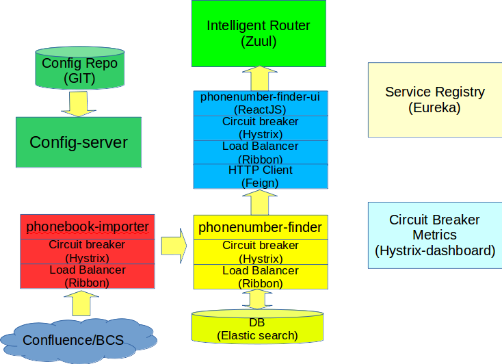

Spring Cloud in a Nutshell
A short introduction of Spring Cloud & Co.
Created by Liang Shi
It is all about Microservices ...


The Twelve-Factor App
What is Spring Cloud?
A tool box for building common patterns of distributed systems
Common patterns of distributed systems
- Distributed/versioned configuration
- Service registration and discovery
- Intelligent routing
- Service-to-service calls
- Load balancing
- Circuit Breakers
- ...
First Practice of Spring Cloud
Configuration Server
- Provides server and client-side support for externalized configuration in a distributed system
- Versioned configuration
- Encrypt/Decrypt property value
- ...
Demo
Service discovery (Eureka)
- Service registration
- Service discovery
- High availability
- ...
Demo
Load balancing (Ribbon)
- Client side load balancing
- Round robin, random, weighted response time
- ...
Service-to-Service calls (Feign)
- HTTP Client made by Netflix
- Uses Spring annotations to configure calls
- ...
Routing (Zuul)
- JVM based router and filter
- Similar routing role as httpd, nginx
- Programmable rules and filters
- ...
Demo
Circuit Breaker (Hystrix)
- Latency and fault tolerance
- Isolates access to other services
- Stops cascading failures
- Enable resilience
- Circuit breaker pattern
- Dashboard
- ...